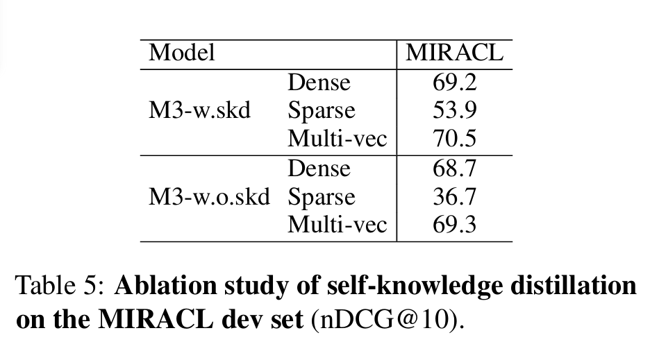

BGE-M3は、従来の単一的なベクトル検索（意味検索）の限界を超えるため、目的の異なる3つの検索手法を単一モデル内に統合することで、検索精度を飛躍的に向上させています。本稿では、その革新的なアーキテクチャと学習戦略について詳しく解説します。
はじめに：BGE-M3とは何か？
BGE-M3は、BAAI（北京智源人工智能研究院）によって開発された、検索タスクに特化した最先端のテキスト埋め込み（Embedding）モデルです。その最大の特徴は、M3パラダイムと呼ばれる3つの汎用性を、単一のモデルで実現した点にあります。
- 多言語性 (Multi-Linguality): 100以上の言語を単一モデルで処理。
- 多機能性 (Multi-Functionality): 目的の異なる3つの検索手法（Dense, Sparse, Multi-vector）を同時に実行。
- 多粒度性 (Multi-Granularity): 短い文から最大8192トークンの長文まで対応。

図1: 論文の図1にあるBGE-M3の全体アーキテクチャ
ハイブリッド検索アーキテクチャ
BGE-M3は、単一のテキストエンコーダを用いて、3種類の検索手法に対応する出力を同時に生成します。エンコーダが入力テキストを処理し、各トークンの文脈情報を保持した隠れ状態ベクトル（Hidden States）の集合を生成します。このベクトル集合を「共通の土台」として、各検索手法がそれぞれの方法で関連度スコアを計算します。
Dense Retrieval (密検索)
テキスト全体の意味的な類似性を捉える手法です。エンコーダの出力のうち、特殊トークン[CLS]に対応する隠れ状態ベクトルを正規化し、テキスト全体を代表する単一の埋め込みベクトルとして使用します。
クエリ $q$ とパッセージ $p$ の関連度スコアは、それぞれの埋め込みベクトル $E_q$ と $E_p$ の内積によって計算されます。
$$Score_{dense}(q, p) = E_q \cdot E_p$$
Lexical Retrieval (字句検索)
テキスト内の各用語（トークン）の重要度を推定する手法です。クエリ内の各用語の重み $W_{q,i}$ は、対応する隠れ状態ベクトル $H_{q,i}$ と、学習によって得られる重み行列 $M_{lex}$ を用いて計算されます。
$$W_{q,i} = text{ReLU}(H_{q,i} M_{lex})$$
最終的な関連度スコアは、クエリとパッセージの両方に共通して出現する用語について、それぞれの重みを掛け合わせた値を合計することで算出されます。
$$Score_{lex}(q, p) = sum_{i,j text{ s.t. } q_i=p_j} max(0, W_{q,i}) cdot max(0, W_{p,j})$$
Multi-Vector Retrieval (多ベクトル検索)
テキストをトークンごとのベクトル集合として表現し、より精密な比較を行う手法です。エンコーダが出力した全ての隠れ状態ベクトルに対し、学習可能な射影行列 $M_{multi}$ を適用して変換します。
$$V_{q,i} = H_{q,i} M_{multi}$$
その後、ColBERTで提案されたLate Interaction（遅延相互作用）メカニズムに基づき、クエリの各トークンベクトルと、パッセージの全トークンベクトルとの間で最も類似度が高いものを探し、それらのスコアを平均して最終的な関連度スコアとします。
$$Score_{multi}(q, p) = frac{1}{|q|} sum_{i=1}^{|q|} max_{j=1}^{|p|} text{sim}(V_{q,i}, V_{p,j})$$
これら3つの手法を用いることで高い検索精度を達成しています。論文によると、各スコアを以下のように足し合わせます。
$$Score_{hybrid}(q, p) = lambda_1 Score_{dense} + lambda_2 Score_{lex} + lambda_3 Score_{multi}$$
論文によると、$lambda_2$ と $lambda_3$ は少し下げているとのことです。
学習戦略
自己知識蒸留 (Self-Knowledge Distillation)
3つの異なる検索手法の学習目標は互いに競合しうるため、単純なマルチタスク学習では性能が低下する可能性があります。この問題を解決するため、BGE-M3は自己知識蒸留という独自の手法を提案します。
これは、3つの手法のスコアを統合して生成した、より賢明な「教師」スコアをモデル自身が作り出し、各手法がその教師から協調的に学習する仕組みです。

図2: 論文の図2にある自己知識蒸留のプロセス
この手法の重要性は実験結果にも明確に表れており、自己知識蒸留を用いない場合、特にLexical Retrievalの性能が著しく低下（nDCG@10スコアが53.9→36.7）します。
実験と評価
BGE-M3の有効性を検証するため、多言語検索、クロスリンガル検索、長文検索の3つのタスクで広範な評価が行われました。
- 多言語検索: MIRACLベンチマークで既存モデルを大幅に上回る性能を示しました。
- クロスリンガル検索: MKQAベンチマークでも高い性能を維持し、低リソース言語でも安定した性能を発揮します。
- 長文検索: MLDRベンチマークおよびNarrativeQAにおいて、ハイブリッド検索による著しい性能向上が見られました。特に長文タスクでは、Sparse Retrievalが重要な役割を果たしています。
Ablation Study (アブレーションスタディ)
モデルの各要素の貢献度を調査するため、アブレーションスタディが実施されました。特に自己知識蒸留を除去すると、特にSparse Retrievalの性能が著しく低下し（53.9→36.7）、異なる手法間の目的の競合を緩和する上で自己知識蒸留が不可欠であることが示されました。この結果は、論文のTable 2で詳細に示されています。
図3: 論文のTable 5にあるアブレーションスタディの結果
結論
BGE-M3の卓越した検索精度は、単一の手法が優れているからではなく、自己知識蒸留によって3つの異なる検索アプローチを相乗効果が生まれる形で巧みに統合している点にあります。この革新的なアプローチは、テキスト埋め込みモデルの新たな可能性を示唆しています。
引用
Shitao Xiao, Peitian Zhang, Zheng Liu, Xingyu He, Shihan Dou, Yuxuan Wang, Yajing Xu, Huangcan Li, Chao Zhang, and Jiangui Chen. 2024. BGE M3: Embedding Everything in a Single Model. arXiv preprint arXiv:2402.03216.